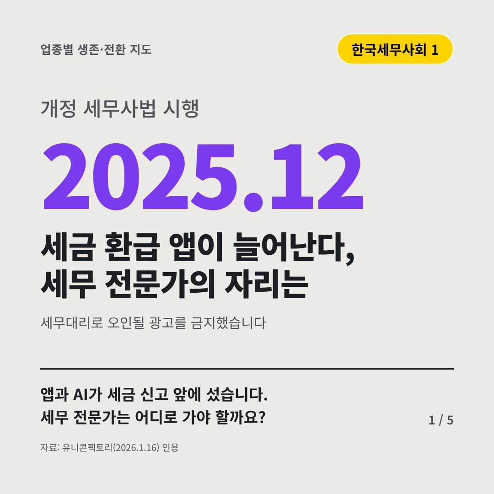
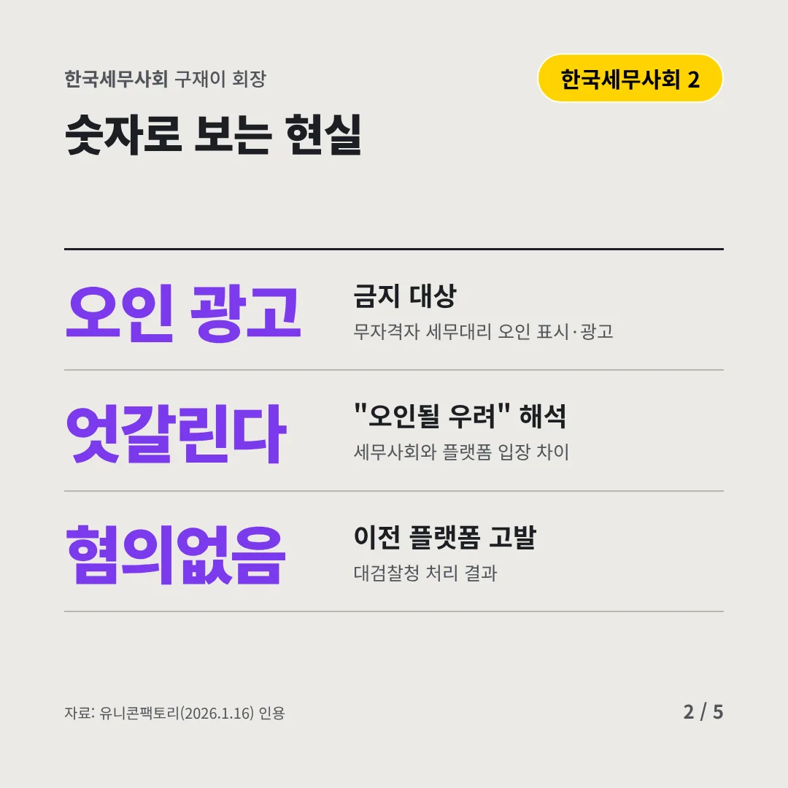
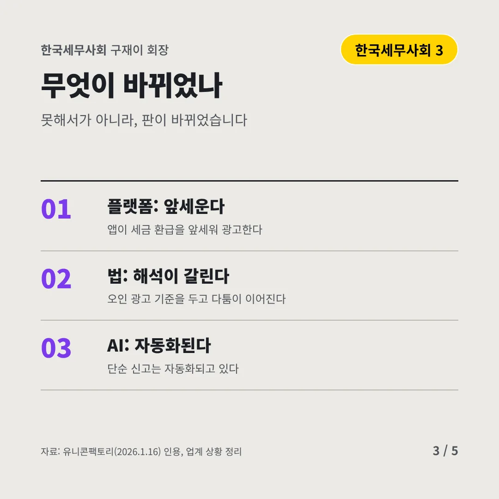
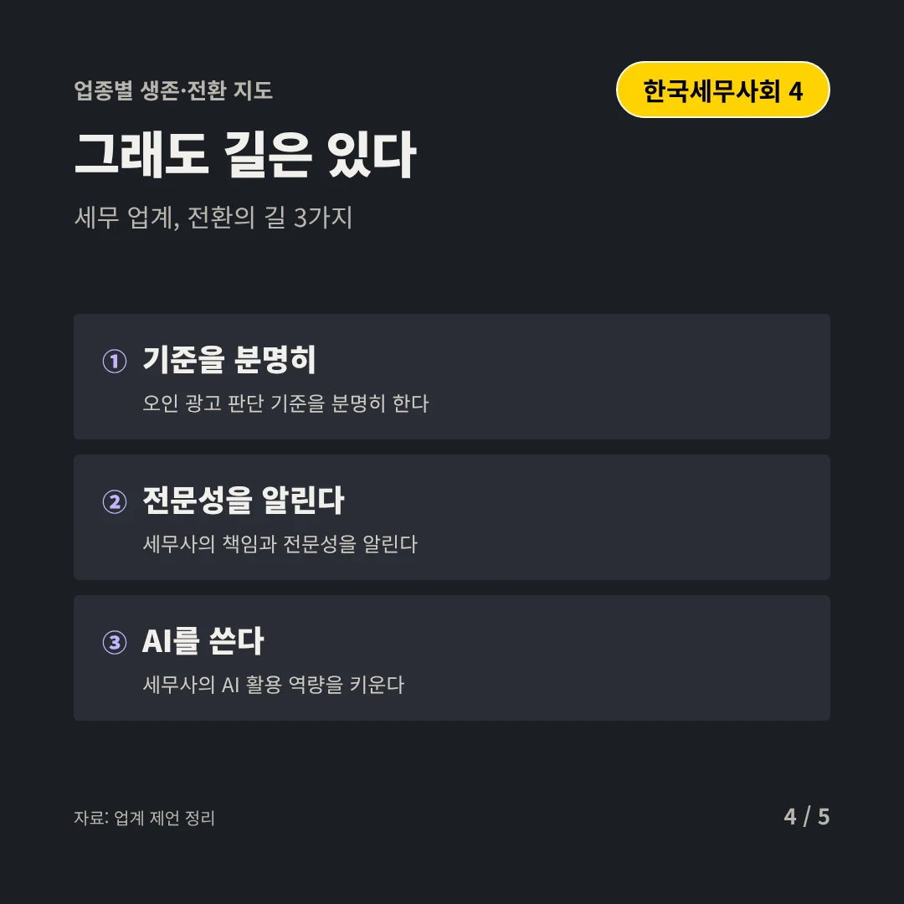
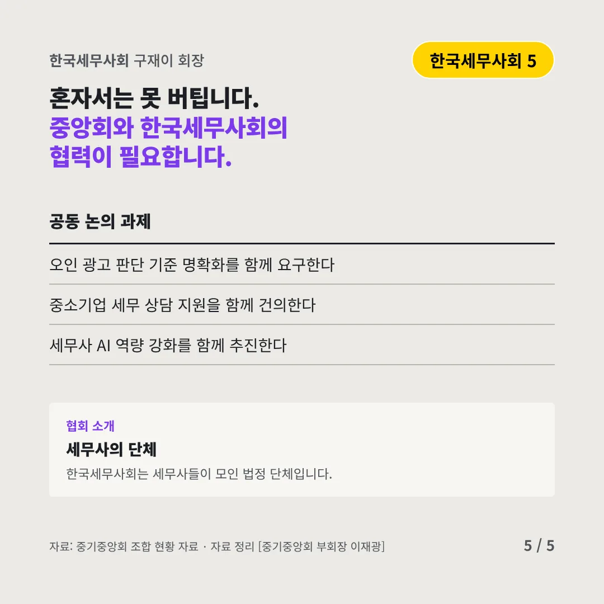
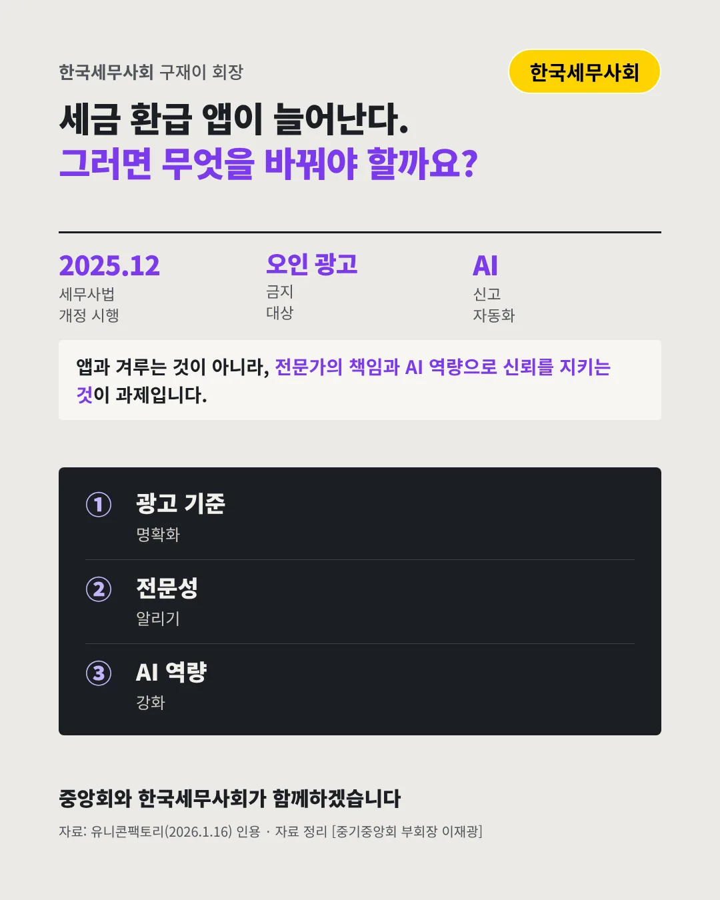

한국세무사회구재이 회장
세금 환급 앱이 늘어난다, 세무 전문가의 자리는
2025.12 개정 세무사법 시행






앱과 AI가 세금 신고 앞에 섰습니다. 세무 전문가는 어디로 가야 할까요?
숫자로 보는 현실
- 오인 광고금지 대상무자격자 세무대리 오인 표시·광고
- 엇갈린다"오인될 우려" 해석세무사회와 플랫폼 입장 차이
- 혐의없음이전 플랫폼 고발대검찰청 처리 결과
무엇이 바뀌었나
- 플랫폼: 앞세운다앱이 세금 환급을 앞세워 광고한다
- 법: 해석이 갈린다오인 광고 기준을 두고 다툼이 이어진다
- AI: 자동화된다단순 신고는 자동화되고 있다
그래도 길은 있다
- 기준을 분명히오인 광고 판단 기준을 분명히 한다
- 전문성을 알린다세무사의 책임과 전문성을 알린다
- AI를 쓴다세무사의 AI 활용 역량을 키운다
한 장 요약

협회 소개
한국세무사회는 세무사들이 모인 법정 단체입니다.
자료: 유니콘팩토리(2026.1.16)